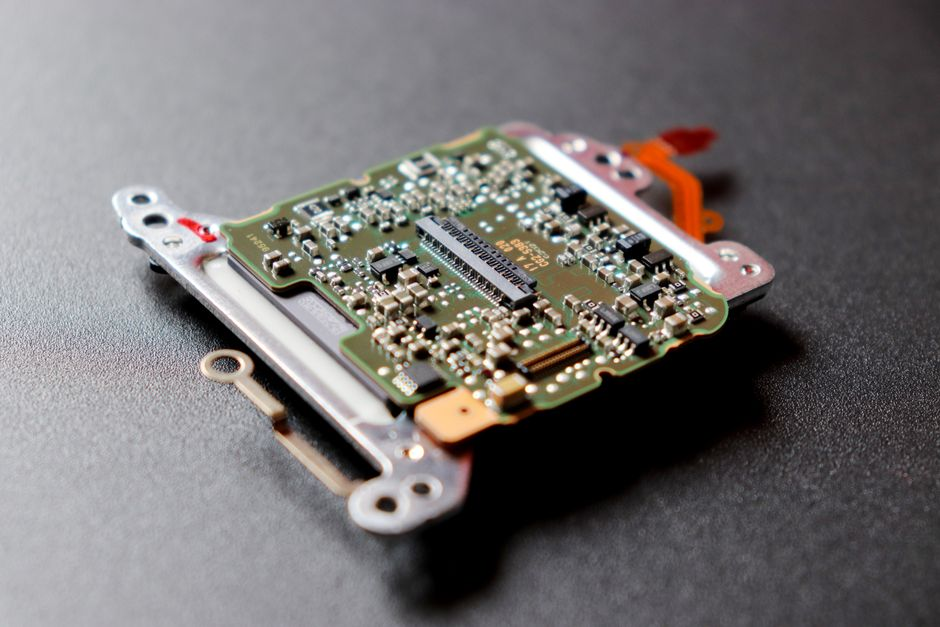

Choosing Between Classical and Deep Computer Vision
Before reaching for a convolutional network, it is worth asking whether a well-tuned classical pipeline could do the job faster, cheaper, and with far less data.

Why this choice still matters
It is tempting to treat computer vision as a solved problem: point a convolutional network or a vision transformer at your images and let it learn everything from scratch. In many cases that works well. But I have seen enough projects stall because a deep model was chosen by default, before anyone asked whether the problem actually needed one, to think the decision deserves more care than it usually gets.
Classical computer vision, edge detectors, colour histograms, Hough transforms, template matching, handcrafted feature descriptors, feels old-fashioned next to deep learning. Yet it is often faster to build, easier to debug, and dramatically cheaper to run. The mistake is not choosing deep learning; it is choosing it reflexively, without weighing it against a real classical baseline first.
This matters because the cost of the wrong choice compounds. A deep model that needs thousands of labelled images and a GPU to run in production is a very different commitment from a classical pipeline that runs on a microcontroller with a few lines of OpenCV. Getting this decision right early saves months later.
The variables that actually decide it
The first and most decisive factor is data volume and variability. Deep learning earns its advantage when the visual patterns are too complex or too varied for hand-designed features to capture, and when there is enough labelled data to learn those patterns reliably. If you have twenty thousand images of manufactured parts under controlled lighting, a convolutional network will likely outperform a classical pipeline on defect detection, because the defects vary in shape and texture in ways that are hard to specify by hand. If you have three hundred images taken in a lab with fixed camera angle and lighting, a deep model risks overfitting badly, and a classical approach using edge features and simple thresholding may generalise better precisely because it has far fewer parameters to misuse.
The second factor is how well-defined the visual task is. Counting circular objects on a conveyor belt, measuring the angle of a known shape, or detecting a barcode are tasks with strong geometric structure. Classical techniques exploit that structure directly: a Hough transform finds circles because it is built to find circles, not because it inferred circularity from examples. Deep learning would need to relearn this geometry from data, which is wasteful when the geometry is already known and fixed. Tasks with high semantic ambiguity, distinguishing between similar-looking plant diseases, or recognising faces across lighting and pose, lack this structure, and that is where learned features tend to win.
The third factor, and the one most often ignored in favour of accuracy numbers, is deployment constraint. A classical pipeline for detecting lane markings might run in under five milliseconds on a low-power embedded chip using nothing more than gradient computation and a simple fit. The deep learning equivalent, even a compact one, may need a dedicated accelerator, more memory, and a power budget the device does not have. If your target hardware cannot support inference at the required speed, the most accurate model in the world is useless. I have seen teams choose a slightly less accurate classical method purely because it was the only one that fit the latency budget, and that was the correct engineering decision, not a compromise.
A worked comparison
Suppose the task is detecting whether a bottle cap is properly sealed on a production line, using a fixed overhead camera. A classical approach might convert each frame to grayscale, apply a threshold to isolate the cap region, measure its contour against a reference shape, and flag deviations beyond a set tolerance. Built and tuned over a couple of days, this pipeline might reach ninety-six per cent accuracy on a held-out test set of production images, run in under two milliseconds per frame on a basic industrial PC, and require no labelled training data beyond a handful of reference shapes.
A deep learning approach, a small convolutional classifier trained on labelled images of sealed and unsealed caps, might reach ninety-eight per cent accuracy given several thousand labelled examples covering different lighting conditions and cap orientations. That two-point gain is real and might matter if the cost of a missed defect is high. But it comes with a cost: collecting and labelling those thousands of images, retraining when the camera angle or lighting changes, and validating that the improvement holds on a genuinely held-out set rather than one that leaked similar frames from the same production run into training. If the evaluation split was done by randomly shuffling frames rather than by separating entire production batches, that ninety-eight per cent could be an illusion built on near-duplicate images rather than genuine generalisation.
This is the part that gets skipped most often: whichever method you choose, the evaluation has to be leakage-aware. Frames from the same bottle, the same lighting session, or the same short time window are correlated, and splitting them randomly between train and test inflates both classical and deep results in similar ways. A fair comparison holds the split constant, evaluates both methods on the same genuinely unseen batches, and reports not just accuracy but latency, data requirements, and maintenance cost side by side. Only then is the two-point accuracy gap meaningful enough to justify the added complexity.
A practical decision guide
In practice, I use a short set of questions before committing to either approach. Is the visual pattern geometrically well-defined, such as shape, colour, or edge structure, or is it semantically complex and hard to specify by hand? Well-defined patterns lean classical. Do you have enough labelled data, on the order of thousands of diverse examples, to train a deep model without overfitting? If not, either gather more data, use a classical baseline, or consider transfer learning with a pretrained backbone as a middle ground. What are the deployment constraints on latency, memory, and power, and does the target hardware genuinely support the model you are considering?
My honest default is to build the classical baseline first, even when I expect deep learning to win eventually. It takes little time, gives you a concrete number to beat, and often reveals that the problem is easier or harder than assumed. If a simple threshold and contour check already reaches ninety-five per cent accuracy, that tells you something important about the task, and any deep model you build afterwards has to justify its added cost against that number, not against zero.
The right choice is rarely dogmatic. It is common to end up with a hybrid: classical preprocessing to isolate a region of interest, feeding into a small learned classifier for the ambiguous part of the decision. That combination often gets most of the accuracy benefit of deep learning while keeping the compute footprint close to classical levels. The decision guide, in the end, is not classical versus deep; it is matching the tool to the structure of the problem, the data you actually have, and the constraints you actually face, and proving the choice with an evaluation that cannot lie to you through leakage or a stacked deck.
